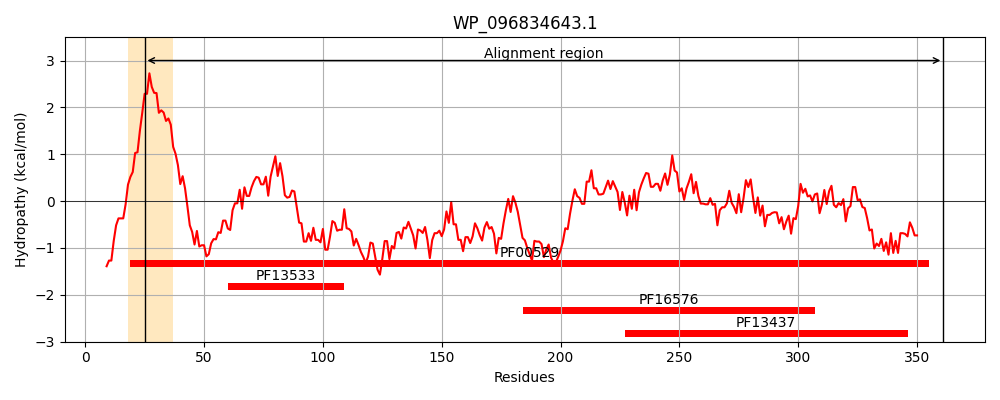
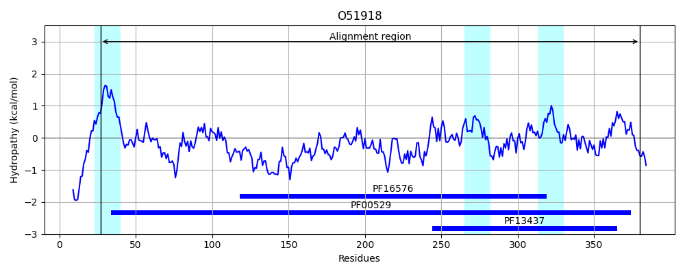
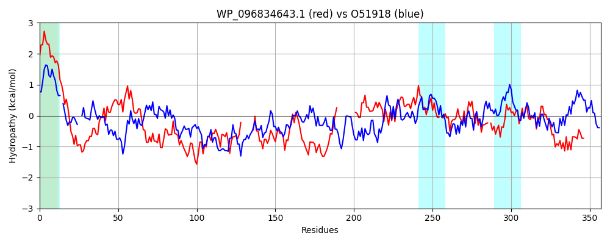

Hit Accession: O51918
Hit TCID: 2.A.1.3.24
Hit Description: gnl|BL_ORD_ID|7299 gnl|TC-DB|O51918|2.A.1.3.24 VceA - Vibrio cholerae.
Mach Len: 357
e:0.000000
Query TMS Count : 1
Hit TMS Count: 3
TMS-Overlap Score: 0.850000
Predicted Substrates:CHEBI:23614;deoxycholate, CHEBI:3259;CCCP, CHEBI:3603;chloramphenicol, CHEBI:7456;nalidixic acid
BLAST Alignment:
Score: 435 , Bit scores: 172 bits, E-value: 4.0e-50, Alignment length: 357, Percentage identity: 34
Query: 25 AAAIGLVGVLVILYAWQLPPFTRHSQFTDNAYVRGQTTFISPQVNGYITAVNVKDFAIVQPGEVLFQIDDRIYKQRVHQAQATLAMKEAALRNNLQQRKSTEATIAKNEAALQNARAQNLKIQADLKRV-------QELTADGSLSIRERDSARASAAQGAADIEQAKAALEMSRQDRESTIVNRDSLEA-----------DVASAKAALELAQIDLQNTQIIAPTGGQLGQISVRLGAYVSAGTHLTSLVPPQH-WVIANLKETQLAEVRIGQPVTFTVDALNGE-RFHGKVQSISPATGVEFSAISPDNATGNFVKIAQRIPVRITVNDGQKYSEHLRPGMSVQVTIDTRAEKQP 361
AAAI + G LY W S TDNAY + ++P V A + G+VL Q+DD + + QA+A LA+ + +R+ L + A + EA Q +AQ QAD +R ++L A GS+S E +A+ AQ A++ AKAA+ ++ + STI ++ + A +V AKA E A+IDL+ T I AP G + + V++G V G L ++VP H +V AN KE +L +V++GQPVT T D + +HG V S TG FS I NATGN++K+ QR+P+RI ++ + L+ G+S+ TIDT P
Sbjct: 27 AAAIVVAGGSYALY-WHFIGSRYIS--TDNAYAAAEIAEVTPAVGRDYRASECRWIPSTSTGDVLVQLDDTDARLALLQAEADLALAKRRVRSYLANDEGLSAMVEAQEANEQRVKAQLKAAQADFERAKIDLSRREDLVASGSVSGEELTNAKTGFAQAQANLNAAKAAMAQAQATKLSTIGSQKANAALTDNTTVDSNPEVLLAKARYEQAKIDLERTVIRAPISGIVAKRQVQVGRRVQVGMPLMTVVPTDHIYVDANFKEVELRDVKVGQPVTLTADLYGDDVTYHGVVAGFSGGTGSAFSMIPAQNATGNWIKVVQRLPIRIELDPKDLQAYPLQVGLSMVATIDTAGTTDP 380 | Protein Hydropathy Plots: |
|---|
|  |  |
Pairwise Alignment-Hydropathy Plot:
|
|---|
|  |